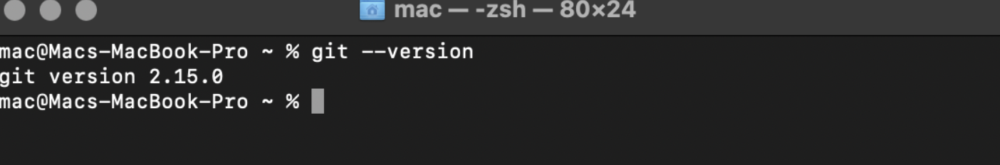
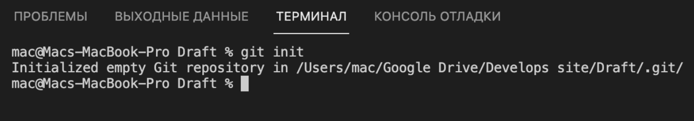
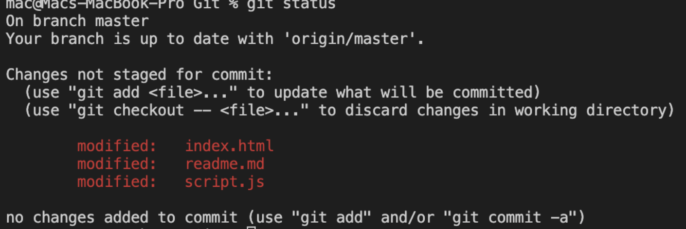
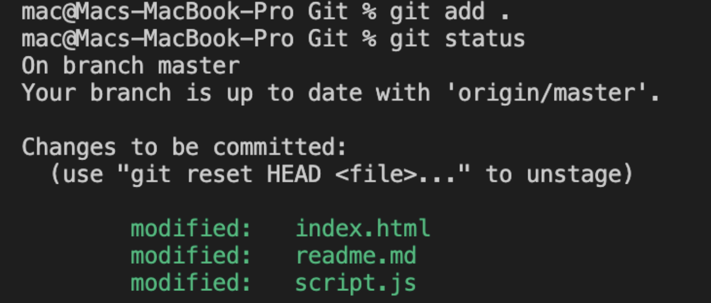
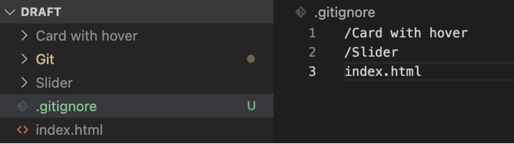
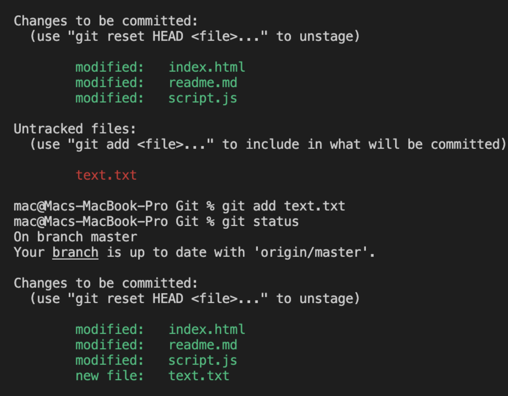
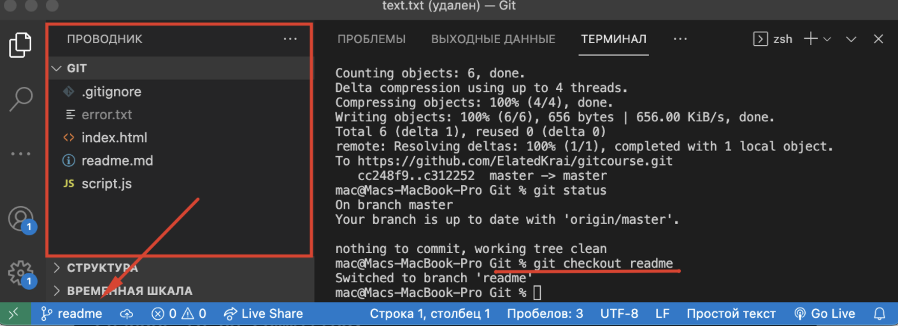

Википедия говорит, что "Git — распределённая система управления версиями". Если еще короче, то это ветка с версиями репозиториев. Представим дерево: cтвол - проект, ветки - версии, а листья - репозиторий.
Изначально компьютер не знает что такое Git, по этому его нужно скачать. При установке путь можно указать свой и главное не менять галочки. Чтобы проверить, установился ли Git, откройте командную строку (Пуск → Поиск → cmd) и введите git -- version.
Примеры показываются на Visual Code со встроенным терминалом, но Git позволяет работать с обычным терминалом ОС (Linux, Mac, Windows). После того как установка прошла успешно, нужно создать проект в IDE (среда программирования) и создать файл. В нашем случае index.html.
С помощью командной строки, мы должны показать git, что с этим проектом мы должны работать. В терминале прописываем команду "git init". Она инициализирует наш проект.
Поздравляю! На этом этапе можно приступать к практике.
Практика
Терминалом указываем путь в корень папки, с которой должны работать. Чтобы не заплутаться, вот команды перемещение:
Пишем в терминал команду git status. Команда показывает статус файлов. В дальнейшем, мы с ним не один раз будем с ней работать.
На данном этапе в терминале показывается, что мы должны добавить файлы, с которыми будем работать. Существует команда: git add и прописываем файт. Например, git add index.html. Так как у нас базовых три файла, будет довольно долго писать три строчки кода. "git add ." - команда, которая добавляет все файлы. Вот что у нас получилось:
Приятно глазу стало, неправда ли? В маленьких IT корпорациях бывают новички, которые по случайности добавили не тот html файл в git. Такое бывает и это нормально, но что с этим делать?
Создаем файл ".gitignore". В этом файле хранятся имена файлов и папок, которые будут игнорироваться. Они будут помечены серым цветом. Например:
Часть, которая мне нравится - ветки. Вспомнимдерево .
Какой смысл ветки (версии)? Изначально мы работаем с веткой master, которая идет по умолчанию. Если создадим новую ветку, допустим test, и изменим код, то это будет другая версия проекта. Система удобная, если нужно оставить рабочий сайт, и создать его клон, чтобы с ним по экспериментировать. Бывает, что эксперимент не удался и можно вернуться на прежнюю версию. В ином случае, если клон работает, то можно объединить версии. Давайте по порядку.
Чтобы убедится, достаточно посмотреть в левый нижний угол Visual Studio Code или прописать команду git branch. Звездочка "*" обозначает, с какой веткой мы работаем.
Команды, которые применяются к ветке:
Рассмотрим, как с ними работать. Создадим файл text.txt в ветке master и прописываем команду commit -m "любой коментарий". Это нужно, чтобы понять что вы меняли в конкретной ветке. Выглядит это примерно так:
Переключаться между ветками можно с помощью команды git checkout. Чтобы переместиться пишем git checkout readme:
Не сложно заметить, что при переключении на другую ветку удалился файл. Существует команда по короче, и пишется так: git checkout -b new test. Она позволяет создать ветку и сразу же с ней работать
Хорошо, а что, если получился тот результат, который нужен? Нужно объединить версии. Делает с помощью команды git merge. Прописываем команду git merge readme и у нас в ветке master есть все, чтобы было в ветке readme. На этом git не заканчивается, но тут расписана базовые команды, которые должен знать каждый.
Все что мы делали, было локально. Но есть программисты, которые работают не с одного компьютера, а с разных. Нужно залить в сеть или скинуть. Есть варианты: "отправить по электронной почте", "отправить в меседжер", "переписать на листочек и отправить по почте". Но таким никто не пользуется, тем более последним вариантом. Для этого придумали Github.